1. 重い手の基本序列は、残す役と受けかぶりで見直す
0面子＋2愚形以上でタンヤオも立直も遠いなら、役牌＞孤立2・8。今回は 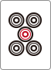 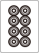
10/26 ねじまき鳥先生
0面子＋2愚形以上でタンヤオも立直も遠いなら、役牌＞孤立2・8。今回は  

4対子は七対子の一向聴が近い合図。0面子で面子手の残りも愚形なら、次の1組が重なった瞬間を見落とさない。ただし4対子だけで七対子に決め打ちせず、面子手の見込みと比較する。
3:00の場面をYouTubeで見る
赤 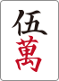 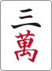 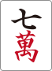 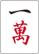 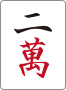 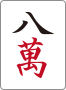 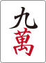 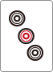 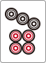

門前では両面2つを含む二向聴。ポンでタンヤオへ向かうと対子などを外す必要があり、三向聴に戻る。 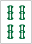

三色を残す候補は 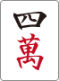 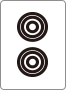 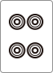

三向聴で立直を受け、現物は 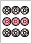 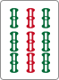

を外せば残りがタンヤオ牌となる手。を外すと決めたら、今回は赤が・のくっつきを受け持てるので先切りもよい。先切りも許容されており、だけを唯一解にはしない。
36:30の場面をYouTubeで見る
3段目でドラを切る気がないなら、カンに固定して、直前に通ったを合わせ安全牌を抱える案がある。名目の受け入れだけでなく、その聴牌で実際に何を押せるかを先に決める。
38:05の場面をYouTubeで見る
・・・ 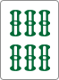

立直後の暗槓でも、・両面を否定する意味ではが通った筋と同じ発想。はより通しやすい候補になるが、カンやシャンポンまで安全になるわけではない。実戦の比較では、既に通ったの現物を優先する。
49:20の場面をYouTubeで見る
は七対子一向聴を維持でき、対子は2枚続けて切れる。危険度が同程度という講師の読みを前提に、点況とルールで重みを変える。最初は生徒がを切ったと取り違えたが、実際の切りを確認して評価を訂正。切りをミス扱いしない。
52:50の場面をYouTubeで見る
カン聴牌を取るか降りるかは両案を許容。降りるなら、よりを抜いてくっつき一向聴を残す。後にが通り、 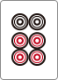

東1局のような平場なら、を切って二向聴に戻し、萬子の4連形やドラへのくっつきを狙う感覚を持つ。今回はラス前で局を進める価値があり、が3枚見えで良形変化も弱い。愚形一向聴を維持する案も許容される。
60:35の場面をYouTubeで見る
南4局5本場・供託1本で、本場1500点＋供託1000点＝2500点。リーノミ1300点でも計3800点の加点となり、下家を逆転できる。講師は観戦時の判断を見直し、赤切り立直を推奨。赤を残すこと自体を目的にしない。
63:05の場面をYouTubeで見る